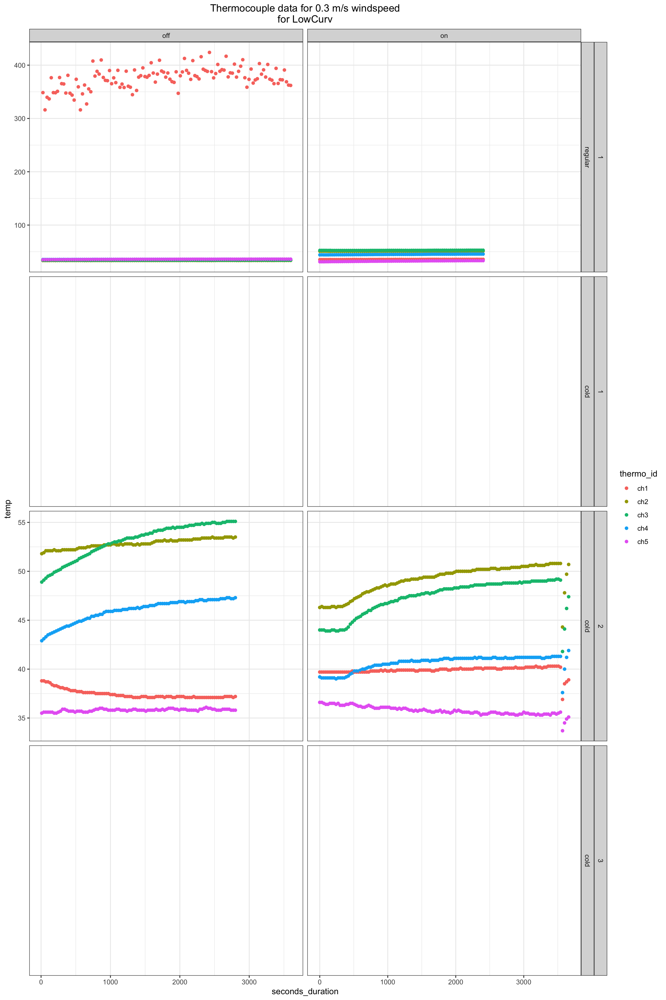
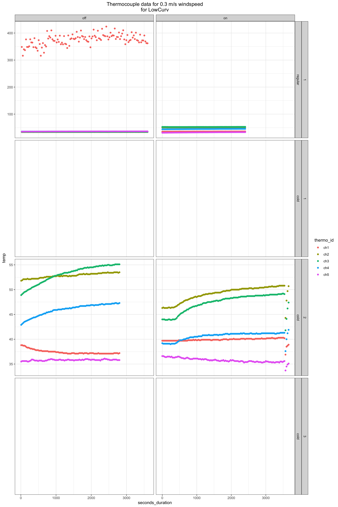
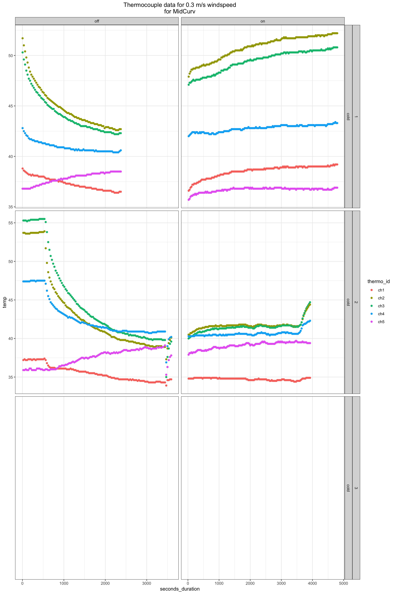
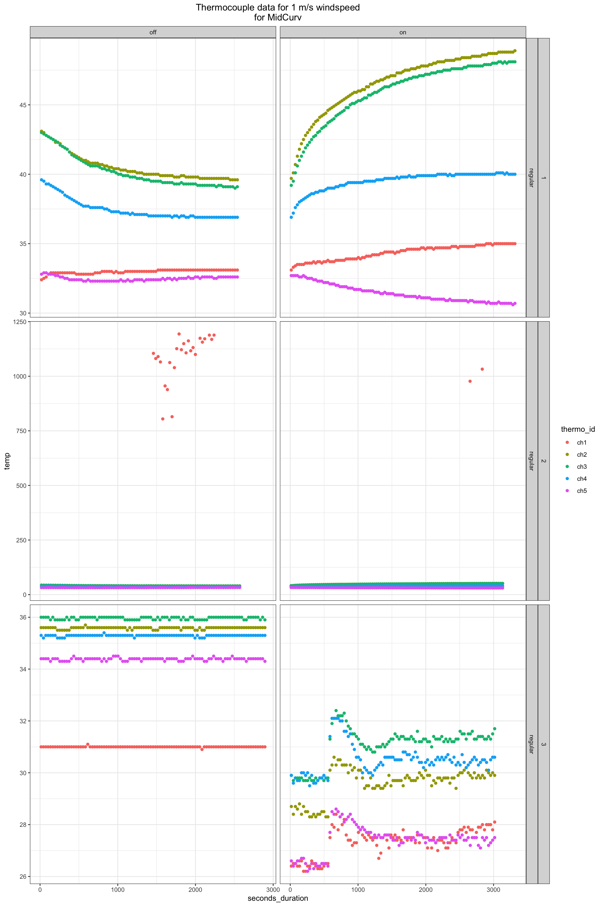
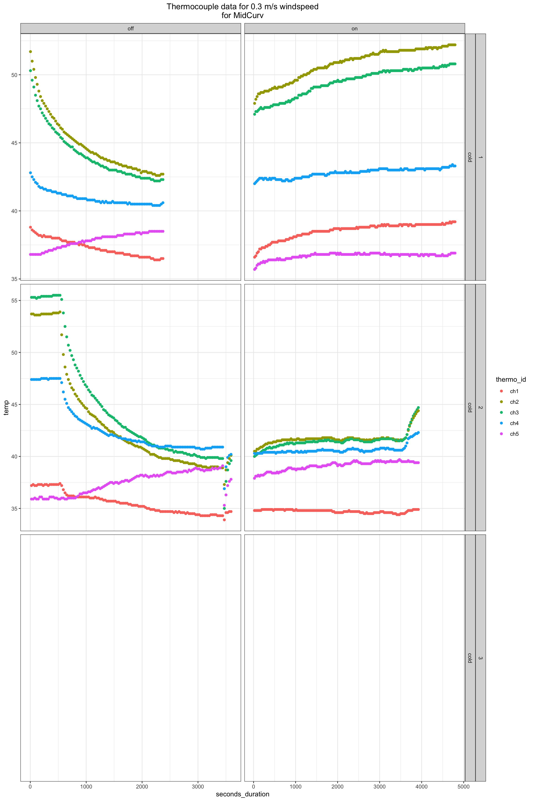
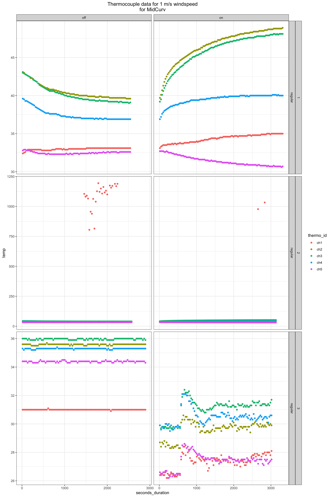
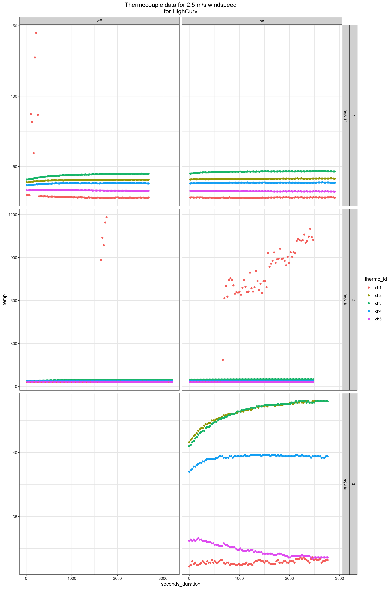
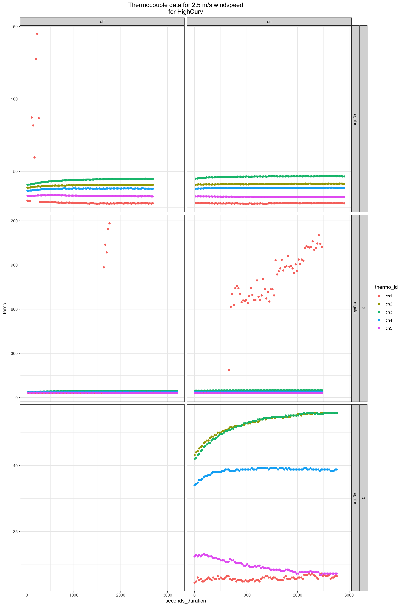
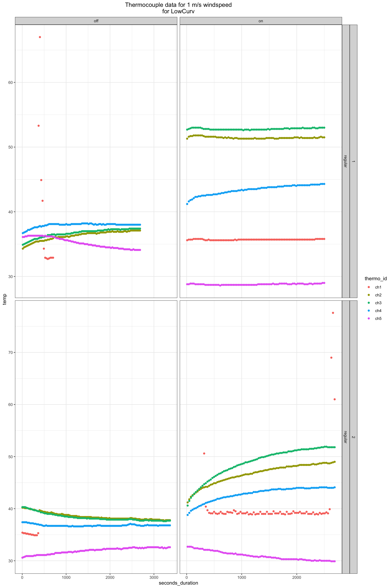
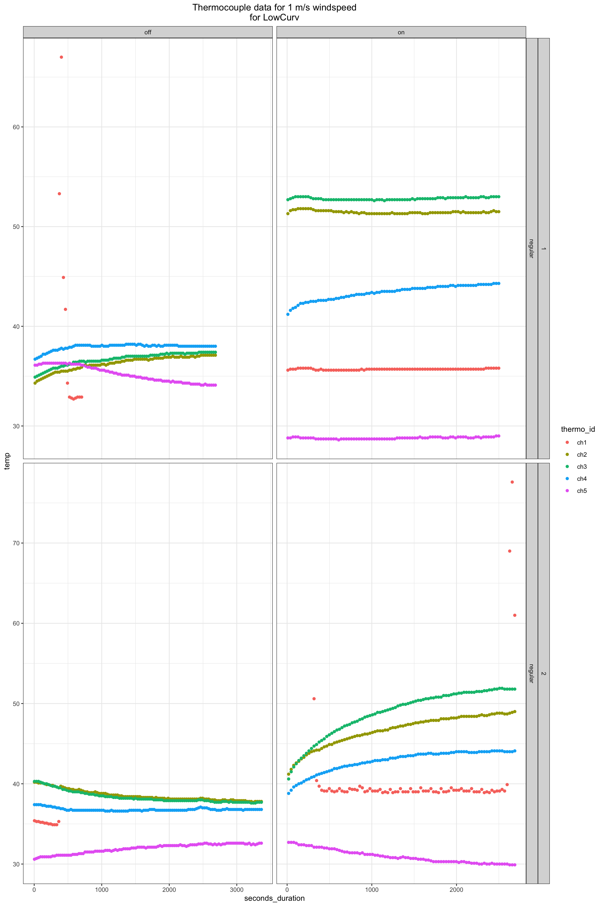

Thermocouple data import and quality contro.
Tina Lasisi
January 08, 2021
Last updated: 2021-01-08
Checks: 7 0
Knit directory: HairManikin/
This reproducible R Markdown analysis was created with workflowr (version 1.6.2). The Checks tab describes the reproducibility checks that were applied when the results were created. The Past versions tab lists the development history.
Great! Since the R Markdown file has been committed to the Git repository, you know the exact version of the code that produced these results.
Great job! The global environment was empty. Objects defined in the global environment can affect the analysis in your R Markdown file in unknown ways. For reproduciblity it’s best to always run the code in an empty environment.
The command set.seed(20200601) was run prior to running the code in the R Markdown file. Setting a seed ensures that any results that rely on randomness, e.g. subsampling or permutations, are reproducible.
Great job! Recording the operating system, R version, and package versions is critical for reproducibility.
Nice! There were no cached chunks for this analysis, so you can be confident that you successfully produced the results during this run.
Great job! Using relative paths to the files within your workflowr project makes it easier to run your code on other machines.
Great! You are using Git for version control. Tracking code development and connecting the code version to the results is critical for reproducibility.
The results in this page were generated with repository version ada77f2. See the Past versions tab to see a history of the changes made to the R Markdown and HTML files.
Note that you need to be careful to ensure that all relevant files for the analysis have been committed to Git prior to generating the results (you can use wflow_publish or wflow_git_commit). workflowr only checks the R Markdown file, but you know if there are other scripts or data files that it depends on. Below is the status of the Git repository when the results were generated:
Ignored files:
Ignored: .Rhistory
Ignored: .Rproj.user/
Untracked files:
Untracked: data/raw/
Untracked: data/tidy/
Note that any generated files, e.g. HTML, png, CSS, etc., are not included in this status report because it is ok for generated content to have uncommitted changes.
These are the previous versions of the repository in which changes were made to the R Markdown (analysis/thermocouple_qc.Rmd) and HTML (docs/thermocouple_qc.html) files. If you’ve configured a remote Git repository (see ?wflow_git_remote), click on the hyperlinks in the table below to view the files as they were in that past version.
| File | Version | Author | Date | Message |
|---|---|---|---|---|
| Rmd | ada77f2 | tinalasisi | 2021-01-08 | Re-uploading latest version of all files + new thermocouple quality |
1 Import data
First, we import the data directly from the raw thermocouple files.
file_paths <- fs::dir_ls(F("data/raw/ManikinData_Oct2018/ThermoLog/RawThermoFiles/RawThermo_csv/"))
raw_dfs <- file_paths %>%
map_dfr(
read_csv,
skip = 22,
na = c("", "NA", "#NA", "#N/A", "Under", "O/C")
) %>%
mutate(Date = dmy(Date)) %>%
clean_names() %>%
rename_at(.vars = vars(ends_with("_c")),
.funs = funs(sub("[_]c$", "", .))) %>%
select(date:ch5, -type) %>%
mutate(DateTime = as_datetime(date(date) + hms(time)))
head(raw_dfs)# A tibble: 6 x 8
date time ch1 ch2 ch3 ch4 ch5 DateTime
<date> <time> <dbl> <dbl> <dbl> <dbl> <dbl> <dttm>
1 2018-10-23 11:39:46 NA 44.9 NA 42.3 30.4 2018-10-23 11:39:46
2 2018-10-23 11:40:16 NA 45 NA 42.2 30.4 2018-10-23 11:40:16
3 2018-10-23 11:40:46 NA 42.3 NA 39 29.7 2018-10-23 11:40:46
4 2018-10-23 11:41:16 31 42 NA 39.2 29.4 2018-10-23 11:41:16
5 2018-10-23 11:41:46 30.8 40.6 NA 38 29.2 2018-10-23 11:41:46
6 2018-10-23 11:42:16 30.6 40 NA 37.5 29.2 2018-10-23 11:42:162 Import Experiment Log
Then, we import the log with the times and dates for each experiment (with conditions used).
# Import the log with each experiment time and conditions
ExperimentLog <- as_tibble(
read_csv(F("data/tidy/ExperimentLog.csv"),
col_types = cols(
Date = col_date(format = "%m/%d/%y"),
TimeStarted = col_time(format = "%H:%M:%S"),
TimeEnded = col_time(format = "%H:%M:%S")))
)
head(ExperimentLog)# A tibble: 6 x 8
Wig Radiation Windspeed RoomConditions Date TimeStarted TimeEnded
<chr> <chr> <dbl> <chr> <date> <time> <time>
1 Nude On 1 regular 2018-10-23 13:41:11 15:29:02
2 Nude On 2.5 regular 2018-10-23 14:34:19 16:16:56
3 Nude Off 2.5 regular 2018-10-23 15:33:26 17:16:36
4 Nude Off 1 regular 2018-10-23 16:18:38 18:10:22
5 Nude Off 0.3 regular 2018-10-23 17:12:31 18:59:58
6 LowC… Off 0.3 regular 2018-10-23 19:12:07 21:12:12
# … with 1 more variable: Trial <dbl>3 Clean data
We then clean the dataframe for the log and remove the intervals where the wind speed is 0.3m/s and the room condition is noted as “regular”. This is because after the first trial, we noticed that, at this wind speed, the manikin would overheat (and we were unable to get measurements) when we turned the radiation on and used the “low curvature” (aka. straight) wig. Because of this, we re-ran all the 0.3m/s experiments for all wigs with those conditions. The conditions are noted as “cold” which meant 4 degrees Celsius (rather than 10) and we also adjusted the manikin body temperature (but I need to check the data on this).
# Also need to remove all intervals where the wind speed is 0.3 and the Room Condition is regular
# change columns to datetime and create intervals for each trial
DateTimeLog <- ExperimentLog %>%
mutate(DateTime_start = as_datetime(date(Date) + hms(TimeStarted)),
DateTime_end = as_datetime(date(Date) + hms(TimeEnded)),
Trial_Interval = interval(DateTime_start, DateTime_end),
Trial_Duration = dseconds(int_length(Trial_Interval)),
WindSpeed = as_factor(Windspeed),
Wig = as_factor(Wig),
Radiation = as_factor(Radiation),
RoomConditions = as_factor(RoomConditions)
) %>%
select(Wig, Radiation, WindSpeed, Trial_Duration, Trial_Interval, RoomConditions, Trial, DateTime_start, DateTime_end)
# %>%
# filter(!(WindSpeed == "0.3" & RoomConditions == "regular"))
head(DateTimeLog)# A tibble: 6 x 9
Wig Radiation WindSpeed Trial_Duration
<fct> <fct> <fct> <Duration>
1 Nude On 1 6471s (~1.8 hours)
2 Nude On 2.5 6157s (~1.71 hours)
3 Nude Off 2.5 6190s (~1.72 hours)
4 Nude Off 1 6704s (~1.86 hours)
5 Nude Off 0.3 6447s (~1.79 hours)
6 LowC… Off 0.3 7205s (~2 hours)
# … with 5 more variables: Trial_Interval <Interval>, RoomConditions <fct>,
# Trial <dbl>, DateTime_start <dttm>, DateTime_end <dttm>3.1 Table with log
| Wig | Radiation | WindSpeed | Trial_Duration | Trial_Interval | RoomConditions | Trial | DateTime_start | DateTime_end |
|---|---|---|---|---|---|---|---|---|
| Nude | On | 1 | 6471s (~1.8 hours) | 2018-10-23 13:41:11 UTC–2018-10-23 15:29:02 UTC | regular | 1 | 2018-10-23 13:41:11 | 2018-10-23 15:29:02 |
| Nude | On | 2.5 | 6157s (~1.71 hours) | 2018-10-23 14:34:19 UTC–2018-10-23 16:16:56 UTC | regular | 1 | 2018-10-23 14:34:19 | 2018-10-23 16:16:56 |
| Nude | Off | 2.5 | 6190s (~1.72 hours) | 2018-10-23 15:33:26 UTC–2018-10-23 17:16:36 UTC | regular | 1 | 2018-10-23 15:33:26 | 2018-10-23 17:16:36 |
| Nude | Off | 1 | 6704s (~1.86 hours) | 2018-10-23 16:18:38 UTC–2018-10-23 18:10:22 UTC | regular | 1 | 2018-10-23 16:18:38 | 2018-10-23 18:10:22 |
| Nude | Off | 0.3 | 6447s (~1.79 hours) | 2018-10-23 17:12:31 UTC–2018-10-23 18:59:58 UTC | regular | 1 | 2018-10-23 17:12:31 | 2018-10-23 18:59:58 |
| LowCurv | Off | 0.3 | 7205s (~2 hours) | 2018-10-23 19:12:07 UTC–2018-10-23 21:12:12 UTC | regular | 1 | 2018-10-23 19:12:07 | 2018-10-23 21:12:12 |
| LowCurv | Off | 1 | 6307s (~1.75 hours) | 2018-10-23 20:13:51 UTC–2018-10-23 21:58:58 UTC | regular | 1 | 2018-10-23 20:13:51 | 2018-10-23 21:58:58 |
| LowCurv | Off | 2.5 | 6304s (~1.75 hours) | 2018-10-23 21:01:02 UTC–2018-10-23 22:46:06 UTC | regular | 1 | 2018-10-23 21:01:02 | 2018-10-23 22:46:06 |
| LowCurv | On | 2.5 | 6106s (~1.7 hours) | 2018-10-24 09:07:48 UTC–2018-10-24 10:49:34 UTC | regular | 1 | 2018-10-24 09:07:48 | 2018-10-24 10:49:34 |
| LowCurv | On | 1 | 6150s (~1.71 hours) | 2018-10-24 09:50:54 UTC–2018-10-24 11:33:24 UTC | regular | 1 | 2018-10-24 09:50:54 | 2018-10-24 11:33:24 |
| LowCurv | On | 0.3 | 6037s (~1.68 hours) | 2018-10-24 10:59:01 UTC–2018-10-24 12:39:38 UTC | regular | 1 | 2018-10-24 10:59:01 | 2018-10-24 12:39:38 |
| MidCurv | Off | 2.5 | 6282s (~1.75 hours) | 2018-10-24 12:08:00 UTC–2018-10-24 13:52:42 UTC | regular | 1 | 2018-10-24 12:08:00 | 2018-10-24 13:52:42 |
| MidCurv | Off | 1 | 6162s (~1.71 hours) | 2018-10-24 12:53:14 UTC–2018-10-24 14:35:56 UTC | regular | 1 | 2018-10-24 12:53:14 | 2018-10-24 14:35:56 |
| MidCurv | On | 1 | 6942s (~1.93 hours) | 2018-10-24 13:38:18 UTC–2018-10-24 15:34:00 UTC | regular | 1 | 2018-10-24 13:38:18 | 2018-10-24 15:34:00 |
| MidCurv | On | 2.5 | 6241s (~1.73 hours) | 2018-10-24 14:36:29 UTC–2018-10-24 16:20:30 UTC | regular | 1 | 2018-10-24 14:36:29 | 2018-10-24 16:20:30 |
| HighCurv | Off | 1 | 6006s (~1.67 hours) | 2018-10-24 16:04:10 UTC–2018-10-24 17:44:16 UTC | regular | 1 | 2018-10-24 16:04:10 | 2018-10-24 17:44:16 |
| HighCurv | Off | 2.5 | 6303s (~1.75 hours) | 2018-10-24 16:46:21 UTC–2018-10-24 18:31:24 UTC | regular | 1 | 2018-10-24 16:46:21 | 2018-10-24 18:31:24 |
| HighCurv | On | 2.5 | 6530s (~1.81 hours) | 2018-10-24 17:32:10 UTC–2018-10-24 19:21:00 UTC | regular | 1 | 2018-10-24 17:32:10 | 2018-10-24 19:21:00 |
| HighCurv | On | 1 | 6301s (~1.75 hours) | 2018-10-24 18:22:45 UTC–2018-10-24 20:07:46 UTC | regular | 1 | 2018-10-24 18:22:45 | 2018-10-24 20:07:46 |
| LowCurv | On | 0.3 | 6312s (~1.75 hours) | 2018-10-25 11:11:06 UTC–2018-10-25 12:56:18 UTC | cold | 1 | 2018-10-25 11:11:06 | 2018-10-25 12:56:18 |
| LowCurv | Off | 0.3 | 6317s (~1.75 hours) | 2018-10-25 11:59:09 UTC–2018-10-25 13:44:26 UTC | cold | 1 | 2018-10-25 11:59:09 | 2018-10-25 13:44:26 |
| Nude | On | 0.3 | 7205s (~2 hours) | 2018-10-25 12:47:59 UTC–2018-10-25 14:48:04 UTC | cold | 1 | 2018-10-25 12:47:59 | 2018-10-25 14:48:04 |
| Nude | Off | 0.3 | 6306s (~1.75 hours) | 2018-10-25 13:48:52 UTC–2018-10-25 15:33:58 UTC | cold | 1 | 2018-10-25 13:48:52 | 2018-10-25 15:33:58 |
| HighCurv | On | 0.3 | 6500s (~1.81 hours) | 2018-10-25 14:37:22 UTC–2018-10-25 16:25:42 UTC | cold | 1 | 2018-10-25 14:37:22 | 2018-10-25 16:25:42 |
| HighCurv | Off | 0.3 | 6314s (~1.75 hours) | 2018-10-25 15:26:38 UTC–2018-10-25 17:11:52 UTC | cold | 1 | 2018-10-25 15:26:38 | 2018-10-25 17:11:52 |
| MidCurv | On | 0.3 | 8406s (~2.34 hours) | 2018-10-25 16:18:52 UTC–2018-10-25 18:38:58 UTC | cold | 1 | 2018-10-25 16:18:52 | 2018-10-25 18:38:58 |
| MidCurv | Off | 0.3 | 6005s (~1.67 hours) | 2018-10-25 17:39:43 UTC–2018-10-25 19:19:48 UTC | cold | 1 | 2018-10-25 17:39:43 | 2018-10-25 19:19:48 |
| HighCurv | Off | 2.5 | 3240s (~54 minutes) | 2018-10-26 09:46:40 UTC–2018-10-26 10:40:40 UTC | regular | 2 | 2018-10-26 09:46:40 | 2018-10-26 10:40:40 |
| HighCurv | Off | 1 | 3515s (~58.58 minutes) | 2018-10-26 10:46:03 UTC–2018-10-26 11:44:38 UTC | regular | 2 | 2018-10-26 10:46:03 | 2018-10-26 11:44:38 |
| HighCurv | On | 1 | 2537s (~42.28 minutes) | 2018-10-26 11:53:15 UTC–2018-10-26 12:35:32 UTC | regular | 2 | 2018-10-26 11:53:15 | 2018-10-26 12:35:32 |
| HighCurv | On | 2.5 | 2501s (~41.68 minutes) | 2018-10-26 12:36:49 UTC–2018-10-26 13:18:30 UTC | regular | 2 | 2018-10-26 12:36:49 | 2018-10-26 13:18:30 |
| LowCurv | Off | 2.5 | 2739s (~45.65 minutes) | 2018-10-26 13:21:09 UTC–2018-10-26 14:06:48 UTC | regular | 2 | 2018-10-26 13:21:09 | 2018-10-26 14:06:48 |
| LowCurv | Off | 1 | 3413s (~56.88 minutes) | 2018-10-26 14:08:57 UTC–2018-10-26 15:05:50 UTC | regular | 2 | 2018-10-26 14:08:57 | 2018-10-26 15:05:50 |
| LowCurv | On | 1 | 2711s (~45.18 minutes) | 2018-10-26 15:07:43 UTC–2018-10-26 15:52:54 UTC | regular | 2 | 2018-10-26 15:07:43 | 2018-10-26 15:52:54 |
| LowCurv | On | 2.5 | 2529s (~42.15 minutes) | 2018-10-26 15:54:15 UTC–2018-10-26 16:36:24 UTC | regular | 2 | 2018-10-26 15:54:15 | 2018-10-26 16:36:24 |
| MidCurv | Off | 2.5 | 2707s (~45.12 minutes) | 2018-10-26 16:46:29 UTC–2018-10-26 17:31:36 UTC | regular | 2 | 2018-10-26 16:46:29 | 2018-10-26 17:31:36 |
| MidCurv | Off | 1 | 2612s (~43.53 minutes) | 2018-10-26 17:32:42 UTC–2018-10-26 18:16:14 UTC | regular | 2 | 2018-10-26 17:32:42 | 2018-10-26 18:16:14 |
| MidCurv | On | 1 | 3170s (~52.83 minutes) | 2018-10-26 18:17:48 UTC–2018-10-26 19:10:38 UTC | regular | 2 | 2018-10-26 18:17:48 | 2018-10-26 19:10:38 |
| MidCurv | On | 2.5 | 2705s (~45.08 minutes) | 2018-10-26 19:11:53 UTC–2018-10-26 19:56:58 UTC | regular | 2 | 2018-10-26 19:11:53 | 2018-10-26 19:56:58 |
| Nude | On | 0.3 | 2853s (~47.55 minutes) | 2018-10-28 09:30:53 UTC–2018-10-28 10:18:26 UTC | cold | 2 | 2018-10-28 09:30:53 | 2018-10-28 10:18:26 |
| Nude | Off | 0.3 | 2705s (~45.08 minutes) | 2018-10-28 10:18:51 UTC–2018-10-28 11:03:56 UTC | cold | 2 | 2018-10-28 10:18:51 | 2018-10-28 11:03:56 |
| HighCurv | Off | 0.3 | 2750s (~45.83 minutes) | 2018-10-28 11:06:50 UTC–2018-10-28 11:52:40 UTC | cold | 2 | 2018-10-28 11:06:50 | 2018-10-28 11:52:40 |
| HighCurv | On | 0.3 | 3137s (~52.28 minutes) | 2018-10-28 11:54:23 UTC–2018-10-28 12:46:40 UTC | cold | 2 | 2018-10-28 11:54:23 | 2018-10-28 12:46:40 |
| LowCurv | On | 0.3 | 3691s (~1.03 hours) | 2018-10-28 12:48:21 UTC–2018-10-28 13:49:52 UTC | cold | 2 | 2018-10-28 12:48:21 | 2018-10-28 13:49:52 |
| LowCurv | Off | 0.3 | 2837s (~47.28 minutes) | 2018-10-28 13:50:41 UTC–2018-10-28 14:37:58 UTC | cold | 2 | 2018-10-28 13:50:41 | 2018-10-28 14:37:58 |
| MidCurv | Off | 0.3 | 3612s (~1 hours) | 2018-10-28 14:41:00 UTC–2018-10-28 15:41:12 UTC | cold | 2 | 2018-10-28 14:41:00 | 2018-10-28 15:41:12 |
| MidCurv | On | 0.3 | 3942s (~1.09 hours) | 2018-10-28 15:42:00 UTC–2018-10-28 16:47:42 UTC | cold | 2 | 2018-10-28 15:42:00 | 2018-10-28 16:47:42 |
| Nude | On | 1 | 4149s (~1.15 hours) | 2018-10-29 08:05:17 UTC–2018-10-29 09:14:26 UTC | regular | 2 | 2018-10-29 08:05:17 | 2018-10-29 09:14:26 |
| Nude | On | 2.5 | 4344s (~1.21 hours) | 2018-10-29 09:15:54 UTC–2018-10-29 10:28:18 UTC | regular | 2 | 2018-10-29 09:15:54 | 2018-10-29 10:28:18 |
| Nude | Off | 2.5 | 2405s (~40.08 minutes) | 2018-10-29 10:29:45 UTC–2018-10-29 11:09:50 UTC | regular | 2 | 2018-10-29 10:29:45 | 2018-10-29 11:09:50 |
| Nude | Off | 1 | 2657s (~44.28 minutes) | 2018-10-29 11:11:15 UTC–2018-10-29 11:55:32 UTC | regular | 2 | 2018-10-29 11:11:15 | 2018-10-29 11:55:32 |
| Nude | On | 1 | 3040s (~50.67 minutes) | 2018-10-29 11:57:36 UTC–2018-10-29 12:48:16 UTC | regular | 3 | 2018-10-29 11:57:36 | 2018-10-29 12:48:16 |
| Nude | On | 2.5 | 2791s (~46.52 minutes) | 2018-10-29 12:49:33 UTC–2018-10-29 13:36:04 UTC | regular | 3 | 2018-10-29 12:49:33 | 2018-10-29 13:36:04 |
| Nude | Off | 2.5 | 4476s (~1.24 hours) | 2018-10-29 13:36:58 UTC–2018-10-29 14:51:34 UTC | regular | 3 | 2018-10-29 13:36:58 | 2018-10-29 14:51:34 |
| Nude | Off | 1 | 2796s (~46.6 minutes) | 2018-10-29 14:56:44 UTC–2018-10-29 15:43:20 UTC | regular | 3 | 2018-10-29 14:56:44 | 2018-10-29 15:43:20 |
| MidCurv | On | 1 | 3039s (~50.65 minutes) | 2018-10-29 15:46:25 UTC–2018-10-29 16:37:04 UTC | regular | 3 | 2018-10-29 15:46:25 | 2018-10-29 16:37:04 |
| MidCurv | On | 2.5 | 3003s (~50.05 minutes) | 2018-10-29 16:38:31 UTC–2018-10-29 17:28:34 UTC | regular | 3 | 2018-10-29 16:38:31 | 2018-10-29 17:28:34 |
| MidCurv | Off | 1 | 2935s (~48.92 minutes) | 2018-10-30 08:45:57 UTC–2018-10-30 09:34:52 UTC | regular | 3 | 2018-10-30 08:45:57 | 2018-10-30 09:34:52 |
| MidCurv | Off | 2.5 | 3005s (~50.08 minutes) | 2018-10-30 09:36:15 UTC–2018-10-30 10:26:20 UTC | regular | 3 | 2018-10-30 09:36:15 | 2018-10-30 10:26:20 |
| HighCurv | On | 2.5 | 3634s (~1.01 hours) | 2018-10-30 10:40:26 UTC–2018-10-30 11:41:00 UTC | regular | 3 | 2018-10-30 10:40:26 | 2018-10-30 11:41:00 |
| HighCurv | On | 1 | 2967s (~49.45 minutes) | 2018-10-30 11:42:09 UTC–2018-10-30 12:31:36 UTC | regular | 3 | 2018-10-30 11:42:09 | 2018-10-30 12:31:36 |
| HighCurv | Off | 1 | 3793s (~1.05 hours) | 2018-10-30 12:35:09 UTC–2018-10-30 13:38:22 UTC | regular | 3 | 2018-10-30 12:35:09 | 2018-10-30 13:38:22 |
| HighCurv | Off | 2.5 | 3097s (~51.62 minutes) | 2018-10-30 13:41:41 UTC–2018-10-30 14:33:18 UTC | regular | 3 | 2018-10-30 13:41:41 | 2018-10-30 14:33:18 |
| LowCurv | On | 2.5 | 4363s (~1.21 hours) | 2018-10-30 14:35:05 UTC–2018-10-30 15:47:48 UTC | regular | 3 | 2018-10-30 14:35:05 | 2018-10-30 15:47:48 |
| LowCurv | On | 1 | 3437s (~57.28 minutes) | 2018-10-30 15:49:15 UTC–2018-10-30 16:46:32 UTC | regular | 3 | 2018-10-30 15:49:15 | 2018-10-30 16:46:32 |
| LowCurv | Off | 1 | 2997s (~49.95 minutes) | 2018-10-30 16:47:51 UTC–2018-10-30 17:37:48 UTC | regular | 3 | 2018-10-30 16:47:51 | 2018-10-30 17:37:48 |
| LowCurv | Off | 2.5 | 3021s (~50.35 minutes) | 2018-10-30 17:38:41 UTC–2018-10-30 18:29:02 UTC | regular | 3 | 2018-10-30 17:38:41 | 2018-10-30 18:29:02 |
| LowCurv | On | 0.3 | 3606s (~1 hours) | 2018-10-31 09:00:02 UTC–2018-10-31 10:00:08 UTC | cold | 3 | 2018-10-31 09:00:02 | 2018-10-31 10:00:08 |
| LowCurv | Off | 0.3 | 2791s (~46.52 minutes) | 2018-10-31 10:01:01 UTC–2018-10-31 10:47:32 UTC | cold | 3 | 2018-10-31 10:01:01 | 2018-10-31 10:47:32 |
| Nude | On | 0.3 | 2925s (~48.75 minutes) | 2018-10-31 10:49:37 UTC–2018-10-31 11:38:22 UTC | cold | 3 | 2018-10-31 10:49:37 | 2018-10-31 11:38:22 |
| Nude | Off | 0.3 | 3791s (~1.05 hours) | 2018-10-31 11:39:37 UTC–2018-10-31 12:42:48 UTC | cold | 3 | 2018-10-31 11:39:37 | 2018-10-31 12:42:48 |
| MidCurv | On | 0.3 | 4195s (~1.17 hours) | 2018-10-31 12:45:09 UTC–2018-10-31 13:55:04 UTC | cold | 3 | 2018-10-31 12:45:09 | 2018-10-31 13:55:04 |
| MidCurv | Off | 0.3 | 2640s (~44 minutes) | 2018-10-31 13:55:58 UTC–2018-10-31 14:39:58 UTC | cold | 3 | 2018-10-31 13:55:58 | 2018-10-31 14:39:58 |
| HighCurv | On | 0.3 | 3355s (~55.92 minutes) | 2018-10-31 14:42:13 UTC–2018-10-31 15:38:08 UTC | cold | 3 | 2018-10-31 14:42:13 | 2018-10-31 15:38:08 |
| HighCurv | Off | 0.3 | 3316s (~55.27 minutes) | 2018-10-31 15:41:56 UTC–2018-10-31 16:37:12 UTC | cold | 3 | 2018-10-31 15:41:56 | 2018-10-31 16:37:12 |
Because the duration of the trials was variable, we will have to normalize the duration of the trials for comparison.
| Wig | Radiation | WindSpeed | Trial_Duration | Trial_Interval | RoomConditions | Trial | DateTime_start | DateTime_end |
|---|---|---|---|---|---|---|---|---|
| Nude | Off | 2.5 | 2405s (~40.08 minutes) | 2018-10-29 10:29:45 UTC–2018-10-29 11:09:50 UTC | regular | 2 | 2018-10-29 10:29:45 | 2018-10-29 11:09:50 |
4 Merge data
We can then merge the raw thermocouple data with the log data to create a dataframe where the experimental conditions are associated with the readings.
ThermoData <- as_tbl_time(raw_dfs, index = DateTime)
# head(ThermoData)
merge_df <- fuzzy_left_join(
DateTimeLog, ThermoData,
by = c(
"DateTime_start" = "DateTime",
"DateTime_end" = "DateTime"
),
match_fun = list(`<=`, `>=`)
) %>%
mutate(seconds_interval = interval(DateTime_start, DateTime),
seconds_duration = dseconds(int_length(seconds_interval)))
head(merge_df)# A tibble: 6 x 19
Wig Radiation WindSpeed Trial_Duration
<fct> <fct> <fct> <Duration>
1 Nude On 1 6471s (~1.8 hours)
2 Nude On 1 6471s (~1.8 hours)
3 Nude On 1 6471s (~1.8 hours)
4 Nude On 1 6471s (~1.8 hours)
5 Nude On 1 6471s (~1.8 hours)
6 Nude On 1 6471s (~1.8 hours)
# … with 15 more variables: Trial_Interval <Interval>, RoomConditions <fct>,
# Trial <dbl>, DateTime_start <dttm>, DateTime_end <dttm>, date <date>,
# time <time>, ch1 <dbl>, ch2 <dbl>, ch3 <dbl>, ch4 <dbl>, ch5 <dbl>,
# DateTime <dttm>, seconds_interval <Interval>, seconds_duration <Duration>merge_df_long <- merge_df %>%
pivot_longer(cols = ch1:ch5, names_to = 'thermo_id', values_to = "temp")
head(merge_df_long)# A tibble: 6 x 16
Wig Radiation WindSpeed Trial_Duration
<fct> <fct> <fct> <Duration>
1 Nude On 1 6471s (~1.8 hours)
2 Nude On 1 6471s (~1.8 hours)
3 Nude On 1 6471s (~1.8 hours)
4 Nude On 1 6471s (~1.8 hours)
5 Nude On 1 6471s (~1.8 hours)
6 Nude On 1 6471s (~1.8 hours)
# … with 12 more variables: Trial_Interval <Interval>, RoomConditions <fct>,
# Trial <dbl>, DateTime_start <dttm>, DateTime_end <dttm>, date <date>,
# time <time>, DateTime <dttm>, seconds_interval <Interval>,
# seconds_duration <Duration>, thermo_id <chr>, temp <dbl>5 Visualize each experimental condition
5.1 All data

 

 


 

5.2 Extreme temperatures removed


 



R version 3.6.3 (2020-02-29)
Platform: x86_64-apple-darwin15.6.0 (64-bit)
Running under: macOS Mojave 10.14.6
Matrix products: default
BLAS: /Library/Frameworks/R.framework/Versions/3.6/Resources/lib/libRblas.0.dylib
LAPACK: /Library/Frameworks/R.framework/Versions/3.6/Resources/lib/libRlapack.dylib
locale:
[1] en_US.UTF-8/en_US.UTF-8/en_US.UTF-8/C/en_US.UTF-8/en_US.UTF-8
attached base packages:
[1] stats graphics grDevices utils datasets methods base
other attached packages:
[1] anomalize_0.2.2 fuzzyjoin_0.1.6 janitor_2.1.0 fs_1.5.0
[5] kableExtra_1.3.1 lubridate_1.7.9.2 tibbletime_0.1.6 knitr_1.30
[9] forcats_0.5.0 stringr_1.4.0 dplyr_1.0.2 purrr_0.3.4
[13] readr_1.4.0 tidyr_1.1.2 tibble_3.0.4 ggplot2_3.3.2
[17] tidyverse_1.3.0
loaded via a namespace (and not attached):
[1] Rcpp_1.0.5 utf8_1.1.4 assertthat_0.2.1 rprojroot_2.0.2
[5] digest_0.6.27 R6_2.5.0 cellranger_1.1.0 backports_1.2.0
[9] reprex_0.3.0 evaluate_0.14 highr_0.8 httr_1.4.2
[13] pillar_1.4.6 rlang_0.4.8 readxl_1.3.1 rstudioapi_0.13
[17] whisker_0.4 rmarkdown_2.5 labeling_0.4.2 webshot_0.5.2
[21] munsell_0.5.0 broom_0.7.2 compiler_3.6.3 httpuv_1.5.4
[25] modelr_0.1.8 xfun_0.19 pkgconfig_2.0.3 htmltools_0.5.0
[29] tidyselect_1.1.0 workflowr_1.6.2 fansi_0.4.1 viridisLite_0.3.0
[33] crayon_1.3.4 dbplyr_2.0.0 withr_2.3.0 later_1.1.0.1
[37] grid_3.6.3 jsonlite_1.7.1 gtable_0.3.0 lifecycle_0.2.0
[41] DBI_1.1.0 git2r_0.27.1 magrittr_1.5 scales_1.1.1
[45] cli_2.1.0 stringi_1.5.3 farver_2.0.3 promises_1.1.1
[49] snakecase_0.11.0 xml2_1.3.2 ellipsis_0.3.1 generics_0.1.0
[53] vctrs_0.3.4 tools_3.6.3 glue_1.4.2 hms_0.5.3
[57] yaml_2.2.1 colorspace_2.0-0 rvest_0.3.6 haven_2.3.1